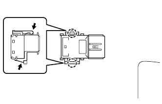
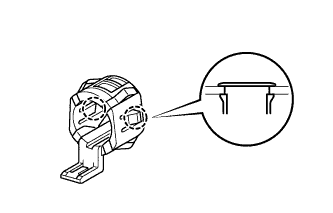

ULTRASONIC SENSOR (for Front) > REMOVAL |
| 1. REMOVE FRONT BUMPER COVER |
for Standard:
Remove the front bumper cover (Click here).
w/ Winch:
Remove the front bumper cover (Click here).
| 2. REMOVE NO. 4 ENGINE ROOM WIRE |
for Standard:
Remove the No. 4 engine room wire (Click here).
w/ Winch:
Remove the No. 4 engine room wire (Click here).
| 3. REMOVE NO. 1 ULTRASONIC SENSOR |
 |
While pushing down on the lever with a finger to release the one claw, detach the claw on the other side to remove the ultrasonic sensor.
| 4. REMOVE NO. 1 ULTRASONIC SENSOR RETAINER |
 |
Detach the 2 claws and remove the ultrasonic sensor retainer from the front bumper cover.